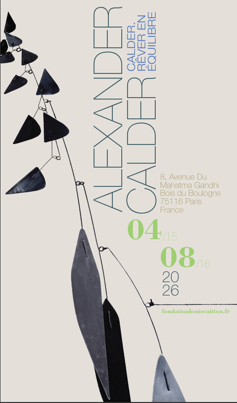

ALEXANDERCALDER
Using sculpture and designing objects as a core subject for the study and analysis of aspects and critical aspects.
11" x 17"

COLOR PROGRESS

Using sculpture and designing objects as a core subject for the study and analysis of aspects and critical aspects.
11" x 17"
